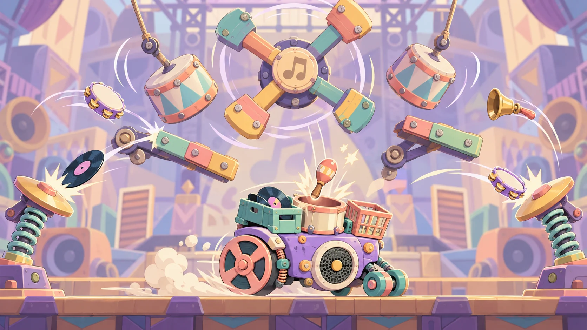

Connect and link
A connect action signs in when the player is signed out and links a provider when already signed in. The same interface supports provider availability and unlink operations.
Balanstein / Ajax Studios
Identity, persistence and leaderboards for Balanstein
I built the player-account, cloud-save, connectivity and leaderboard architecture behind Balanstein, with focused service APIs for gameplay and UI.
My role Technical Team Lead at Ajax Studios · Architecture, implementation and engineering ownership

I designed and implemented Balanstein’s online-services layer around clear boundaries between gameplay, UI and SDK-specific behavior. The core contains five areas: bootstrap and service access, authentication, cloud save, connectivity and leaderboards.
UGSCore controls core startup order: verify connectivity, initialize UGS, isolate third-party sign-in SDK initialization, construct the services and register them. Teardown disposes services and removes their event subscriptions.
Facade, strategy and observer patterns give each component a focused responsibility. Constructor-injected provider, repository, connectivity-probe and board-data interfaces keep the SDK edge replaceable.
Unity Authentication’s player ID is the canonical identity. Anonymous, Unity Player Accounts, Facebook and Google Play Games sign-in methods connect to that identity, allowing a guest account to acquire linked providers.
A connect action signs in when the player is signed out and links a provider when already signed in. The same interface supports provider availability and unlink operations.
The three external providers report account conflicts in a structured result, allowing one stay-or-switch flow to handle an identity already associated with another account.
Cached sessions restore through Unity Authentication. Typed linked-account lookups and cached player names keep SDK calls out of routine UI refreshes.
Unity Player Accounts bridges its browser flow into tasks. Facebook handles Classic and Limited Login token candidates. Google Play Games uses manual authentication and a server auth-code exchange.
Each operation owns its cancellation-token source and releases shared state only if that source is still current. This ownership rule fixed a race where completion of an older canceled operation could clear a newer operation’s busy flag.
The save is one versioned JSON document. A repository handles UGS Cloud Save calls while the service owns caching, dirty state, write-lock tracking and synchronization policy.
The model covers currencies, lives, upgrades, unlocked and selected carts, and story/checkpoint progress. Player names belong to Authentication rather than being duplicated in save data.
Cloud writes use a previous write lock when available. Conflict repair first loads the current lock before attempting a local-wins save.
Healthy, SyncDelayed and Unhealthy states distinguish pending synchronization from repeated failures while online. Health-change events give the UI a focused status signal.
Pause and quit hooks attempt to flush dirty data. Per-player cache and pending snapshots support recovery beyond an individual service call.
A stateless facade exposes currency, upgrades, cart unlocks/selection, progression, lives and an explicit flush, with safe defaults before service readiness.
Controlled batching test: 28 rapid batched changes produced zero cloud writes before an explicit flush, followed by one write on flush.
The connectivity service checks operating-system reachability, then uses an injectable HTTPS probe that accepts only an exact 204 response. Redirects are disabled and cache handling avoids accepting a stale response as proof of internet access.
A core online gate delays UGS startup until connectivity is verified. State-change events drive a persistent connection-lost overlay with Retry and checking feedback. The overlay preserves its display state during an online → checking → online transition, avoiding a visible flash.
Monitoring avoids repeated probe requests while already online. Separating the probe from the service makes the network check replaceable, while transition-only online/offline events provide synchronization signals to the save service.
I built and tested Local, Weekly and Global leaderboards for Balanstein. A shared leaderboard facade and presentation architecture separate SDK access, board-specific data and scrolling UI.
A five-member data-source interface describes board identity, scope, page limits, page fetching and the player’s row. The Global adapter is approximately 30 lines.
A fixed pool of rows is placed in the scene. Scrolling repositions and rebinds these rows instead of instantiating new row objects at runtime.
Each fetched page is mapped into immutable row view models. Rank, name, avatar initial, colours and score text are prepared before binding rather than formatted on every scroll event.
Scroll position triggers page loading. The controller coordinates loading, empty, error and retry states, while a short-list guard prevents the documented duplicate-row case.
A stable hash of the player ID selects avatar colours so the same player keeps a consistent presentation across boards and sessions.
The facade retrieves the player’s own entry independently of the loaded page, allowing the interface to show personal rank alongside the board.
The fixed row pool addresses row creation during scrolling. I also tracked the documented first-fill TextGenerator allocation separately, keeping that one-time cost distinct from row reuse.
Alongside the core UGS services, I implemented Firebase analytics wrappers and local/push notification integration.
Event methods cover level starts, failures and wins, attempts, tutorials, shop entry, cart selection and game open/close, alongside app-version, platform and bundle metadata.
Local notifications support relative delays and calendar-based scheduling, Android notification channels, iOS notification APIs and cancellation of scheduled/delivered notifications.
A central controller stores the notification preference and shares it with the local and remote notification components.
Firebase Messaging initialization, registration and message handling sit behind a dedicated remote-notification component.
The Android service implementation uses IL2CPP and ARM64. Google Play Games integration required coordinating plugin setup, OAuth/signing configuration, SDK initialization and Gradle dependency resolution.
I placed custom Google Play dependencies outside the EDM4U-managed Gradle block so dependency resolution preserved them. Build investigation also traced a minification failure to the stripped Google Play Games class, linking the observed sign-in problem to the Android build configuration.
Authentication, cloud-save flows, offline recovery and the Global leaderboard path were verified on real Android devices through Google Play’s internal testing track. Local and Weekly leaderboards were also built and tested.
Dedicated controls made service states reproducible: an offline save button, cloud-save inspection controls, a reusable-list dummy feeder and leaderboard submit/fetch controls supported targeted checks.
I documented 47 architecture decisions and worked in milestones, revisiting earlier choices as the service requirements became clearer. A timer-based retry design became event-driven synchronization aligned with the game’s connectivity model.
SDK provider classes handle provider integration; repositories handle cloud calls; services coordinate policy; UI binders observe state.
Authentication providers, connectivity probes and board data sources implement injected interfaces, allowing their behavior to be extended at defined boundaries.
Immutable result objects represent success, failure and account conflicts. Small, caller-focused interfaces keep gameplay and UI away from broad SDK surfaces.
A small locator and a stateless gameplay facade support MonoBehaviour callers, while constructor injection keeps the core service dependencies explicit.
The core service inventory contains 40 C# scripts and 8,268 lines. Including the analytics and notification components, the supplied snapshot contains 45 scripts and 9,098 lines. The figures describe two scopes of the same implementation.
Stack: Unity 6.3 LTS, C#, UGS Authentication, Player Accounts, Cloud Save and Leaderboards, Facebook SDK, Google Play Games, Firebase Analytics/Messaging, Unity Mobile Notifications, Newtonsoft.Json and uGUI.